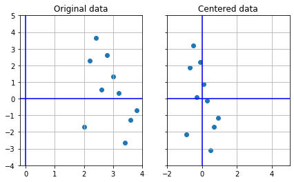
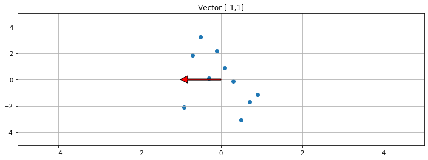
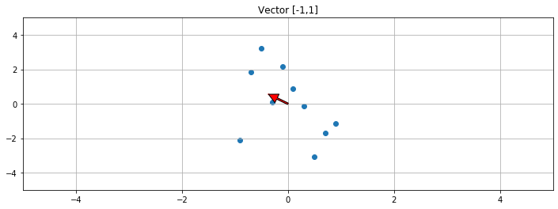
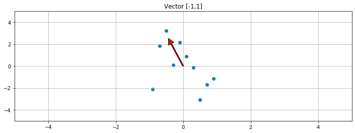
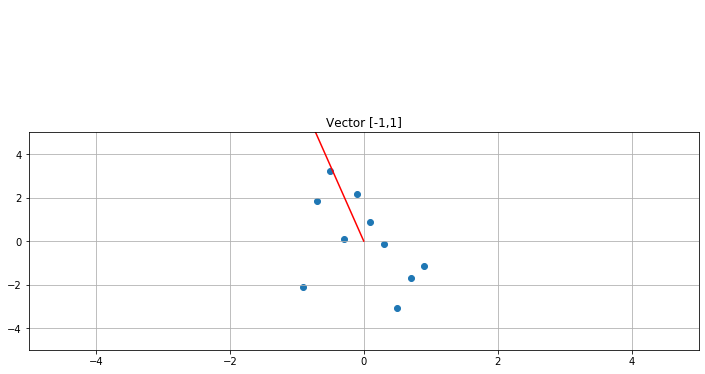
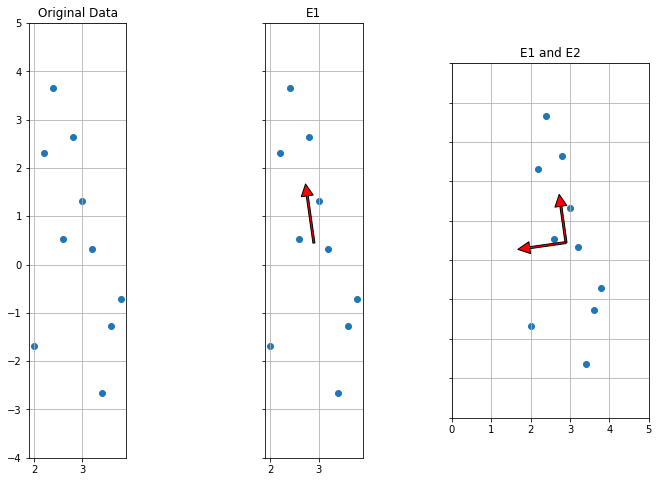

1 | import numpy as np |
1 | np.random.seed(100) |
array([[ 2. , -1.68093609],
[ 2.2 , 2.30235361],
[ 2.4 , 3.65699797],
[ 2.6 , 0.52613067],
[ 2.8 , 2.63261787],
[ 3. , 1.3106777 ],
[ 3.2 , 0.32561105],
[ 3.4 , -2.65116887],
[ 3.6 , -1.26403255],
[ 3.8 , -0.71371289]])
1 | A = (A-np.mean(A,axis=0)) |
(-4, 5)

1 | S = np.dot(A.T,A)/(A.shape[0]-1) |
The covariance matrix is:
[[ 0.36666667 -0.55248919]
[-0.55248919 4.18798554]]
1 | f, ax1 = plt.subplots(1, 1, sharey=True, figsize=(12,4)) |
Vector slope: [-0.]
(-5, 5)

1 | f, ax1 = plt.subplots(1, 1, sharey=True, figsize=(12,4)) |
Vector slope: [-1.50678871]
(-5, 5)

1 | f, ax1 = plt.subplots(1, 1, sharey=True, figsize=(12,4)) |
Vector slope: [-5.72313052]
(-5, 5)

1 | f, ax1 = plt.subplots(1, 1, sharey=True, figsize=(12,4)) |
Vector slope: [-6.94911232]
(-5, 5)

1 | print("The slope of the vector converges to the direction of greatest variance:\n") |
The slope of the vector converges to the direction of greatest variance:
Vector slope: [-7.0507464]
Vector slope: [-7.0577219]
Vector slope: [-7.05819391]
Vector slope: [-7.05822582]
Vector slope: [-7.05822798]
Vector slope: [-7.05822813]
1 | # https://en.wikipedia.org/wiki/Eigenvalue_algorithm |
The eigenvalues are:
L1: 4.266261447240239
L2: 0.28839076171131417
1 | # Cayley-Hamilton theorem |
The eigenvectors are:
E1: [-0.14027773 0.9901122 ]
E2: [-0.9901122 -0.14027773]
1 | E = np.column_stack((E1,E2)) |
array([[-0.14027773, -0.9901122 ],
[ 0.9901122 , -0.14027773]])
1 | evals, evecs = np.linalg.eigh(S) |
[0.28839076 4.26626145]
[[-0.9901122 -0.14027773]
[-0.14027773 0.9901122 ]]
1 | f, (ax1, ax2, ax3) = plt.subplots(1, 3, sharey=True, figsize=(12,8)) |
(-4, 5)

1 | F1 = np.dot(A, E1) |
array([[-1.97812455, 1.18924584],
[ 1.93772363, 0.43245658],
[ 3.25091797, 0.04440771],
[ 0.12295254, 0.28557622],
[ 2.18055566, -0.20793946],
[ 0.84363103, -0.22052313],
[-0.15975102, -0.28036266],
[-3.13515266, -0.06080918],
[-1.78978762, -0.45341595],
[-1.27296497, -0.72863598]])
1 | pca = decomposition.PCA(n_components=2) |
[[-1.97812455 1.18924584]
[ 1.93772363 0.43245658]
[ 3.25091797 0.04440771]
[ 0.12295254 0.28557622]
[ 2.18055566 -0.20793946]
[ 0.84363103 -0.22052313]
[-0.15975102 -0.28036266]
[-3.13515266 -0.06080918]
[-1.78978762 -0.45341595]
[-1.27296497 -0.72863598]]
1 |